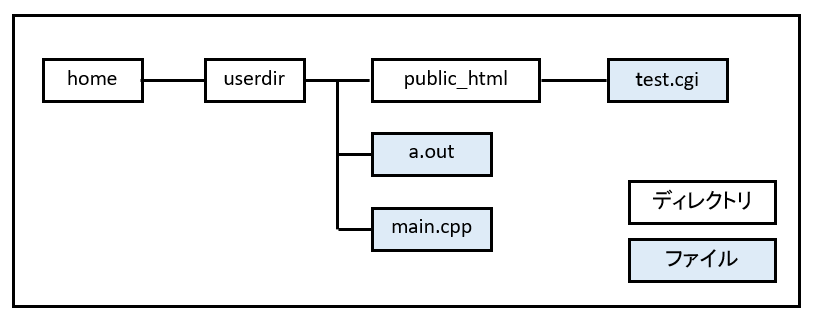
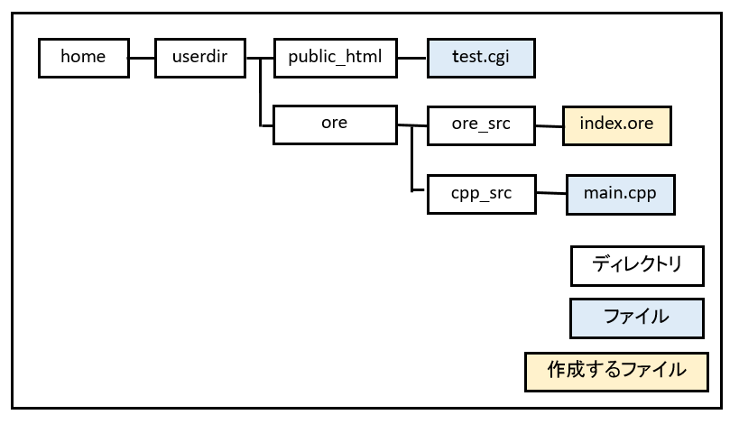

図1002a
これを以下の様に整理します。

図1002b
a.outはコンパイルするとできますので削除してかまいません。
<!DOCTYPE html> <html lang="ja"> <head> <meta charset="utf-8"> <title>最初の俺</title> </head> <body> <h2>俺の世界へようこそ！！</h2> </body> </html>
#include <fstream>
#include <iostream>
#include <string>
using namespace std;
int main() {
ifstream ifs("../ore/ore_src/index.ore");
if (ifs.fail())
{
cout << "Content-type: text/html\n\n";
cout << "ファイル読み込みに失敗しました" << endl;
return 0;
}
cout << "Content-type: text/html\n\n";
string str;
while (getline(ifs, str))
{
cout << str << endl;
}
return 0;
}
$ g++ main.cpp -std=gnu++0x $ cp a.out ../../public_html/ore.cgi
http://hoge.huga.jp/~[username]/ore.cgi
俺の世界へようこそ！！
１．index.oreを読み込む ２、内容を解析する ３、内容を実行し、必要なら出力する